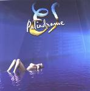

| Artist: | Elegant Simplicity |
| Title: | Palindrome |
| Label: | Proximity Records ESCD 13 |
| Length(s): | 60 minutes |
| Year(s) of release: | 2001 |
| Month of review: | [07/2001] |
| 1) | Palindrome | 4.46 |
| 2) | The Twinning Of Souls | 6.28 |
| 3) | The Way Back Home | 10.10 |
| 4) | Between Two Points | 9.08 |
| 5) | Let It Be Me | 9.48 |
| 6) | The Physical World | 8.39 |
| 7) | Still Fluttering | 3.54 |
| 8) | Still Hearing Your Voice | 7.49 |
The Way Back Home is the longest track on the album, and the first one having vocals. The vocals are by Ken Sneior, and the vocal part is actually quite good and memorable. The instrumental part is sometimes a bit too friendly and mellow for me. A bit more bite or conciseness would help. Plenty of organ on this track. Halfway the vocal part changes a bit and the music becomes both a bit more up-beat, but also more frolic. Some good parts in here, but I don't know...the music seems be constructed from stringing often quite poppy themes together and there are too many parts where the music does not seem to develop. It is hard to explain.
Little changes in the overall sound on the fourth track. Weird about this track is that it stops in the middle and then a new track seems to start. Again, the drumming sounds tinny and automatic. A question and answer game between keyboards and guitar follows. Maybe a bit of Oldfield in here, although the guitar sound can be quite heavy in the second part of this track. Lots of tunes again that keep on recurring, but again it all sounds predictable.
Let It Be Me opens badly. An insistent riff keeps on repeating. Now when the fast keyboards set in, this is masked out a bit. Then we come to the vocal part which is better, although the harmony vocals sound a bit sloppy. Anyway, I find Seniors voice very pleasant and he has good vocal melodies to work with. Poppy, but they are certainly not bad. All the while, the rhythm guitars are droning on, quite a contrast with the accessible vocals. The song has quite a jazzy feel at times with its laid back Fender Rhodes sound.
The Physcial World continues the line of the album. The theme of this instrumental track is very good, and the music has, like in fact most of this album, a very warm feel. Later on the music becomes heavier again with dark chords. The music can all of a sudden turn back to the mellow Fender sound. Rather arbitrary.
Acoustic guitar open Still Fluttering. This song sounds rather depressed and with all the mellotron, the name of Genesis comes to mind. The chorus could be better sung. Still Hearing Your Voice is the closing instrumental of the album. There are some really nice parts on this track, especially when the music becomes a bit more forceful. The music reminds me a bit of Floyd and a bit of Eloy. The keyboards are rather prominent and cosmic on this one, although the guitar does have a long solo slightly past middle. Very good. Acoustic guitar closes down this track, and the album, recouping the theme of the beginning. Best track on the album, I think.